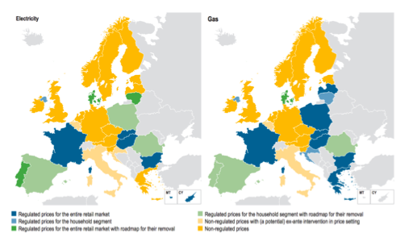

Chapter3 Energy Prices
3.1 Market design
Currently we are at a market design shift, where some countries are already under liberalized market, others in transition.
Most Utilities operated under a Monopoly, namely a horizontal one, where Generation, Transmission, Distribution and Delivery, was done by the same entity.
To get to a fully to liberalized market, Europe has chosen an ownership unbundling model, where infrastructure access plays a central role.
Regulation of the infrastructure access´ prices, or guarantee a fair access to infrastructure so as the need to guarantee safety so as sustainability of supply, are central issues when arguing about a fully integrated Energy Market.
The split of generation, transportation (and grid operations & management) and commercialization, is reshaping the energy sector. The consolidation and integration of the EU Energy Market presents a great opportunity for several stakeholders and a challenge to consolidated utilities companies.
When dealing with industries that have a common infrastructure, as utilities (which includes energy and water), telecoms, access to infrastructure plays a central role. You can just think of activities where building infrastructure by each player would be undoable, so they all share the same. Most, namely in Europe, were build by Governments, where access do energy, water, telecommunications was a competence of Governments.
So when liberalizing markets, Antitrust and competition are central concerns on creating and promoting a fair and competitive market. The ownership unbundling model (regulation of the infrastructure access´ prices) is one models used where:
Infrastructure´s assets belongs to the state (even if concession may be considered for long periods of time, under public interest).
There is the coexistence of Free market and last resort suppliers, so the need to regulate relationships between liberalized market and last resort supplier so as these two with the end consumers.
The Pricing (of using the grid), such as : historical cost, incremental costs, Retail Minus, Free access, Price Caps – will promote different incentives, will define the behavior of the company managing the grip. For example, if you put a price cap and don´t pay any contribution for maintenance and improvement of the overall grid, most likely you will have and overexploitation of the grid. On the other hand, if you have any top limit for investment, these companies have an incentive to over investment and, most likely this investment will have some reflection on the final energy prices. 
Currently, we are going through a transition on how energy markets operate, from a centralized monopoly model to a distributed and liberalized market.
This transition has been occurring in many countries over the last decade, with special emphasis in the European Union.
With the growth of distributed generation, namely RES (as Wind farms, Rooftop PV), but also with the current technologies Combined Heat and Power Plant, plus as Storage, Electrical Cars (EV), the grid management tends to go from top down approach to complex network management.
This market transition has occurred in parallel with an energy systems transition, from centralized generation models to distributed generation models.
In centralized generation systems, energy is generated in large powerplants which are typically located away from final users.
Now, with the increasing use of different technologies, namely renewables like wind and solar, it is possible to generate electricity closer to final users in smaller powerplants. Ultimately, users can themselves generate electricity for self-consumption or to inject in the grid.
Both these transitions, which cannot be decoupled as one contributed to the other, introduced many challenges and are reshaping the energy sector, technologically and economically.
Grid management had to change from a model where only one company was responsible for all activities and where all the flows had one direction (from generation to commercialization) to a model where many companies can operate both at the generation and commercialization, but also to a model where the customers themselves can generate energy. So, grid management is becoming more complex due to the existence of multiple players and because energy flows can have two directions. Further, the increasing use of renewables, characterized by their intermittency, as well as new technologies like electric vehicles or storage systems, introduces additional technical challenges.
3.2 Market Players and Supply Chain
3.2.0.1 Market Players
As you recall, we are dealing with a model where all players share the same infrastructure (the energy grid – electricity, gas or other).
In order to this model work, besides supply and demand players, there´s the need of regulators, Distribution and Transmission System Operators, and entities that their role is to make sure supply always meet demand.
The main players in energy markets are:
The Governments, which are responsible for planning, and have the ultimate responsibility to oversee that all players develop their activity within the rules;
National Regulatory Authorities (NRAs): which are responsible for monitoring and supervising the activities of all agents;
The Transmission System Operator (TSOs) and Distribution System Operator (DSOs), which are the companies responsible for managing the physical infrastructures (overhead electricity lines, pipelines, substations, etc.) – the transmission refers to the infrastructure in which the bulk energy between the power plants and cities or between countries is transported; while the distribution refers to the infrastructure in which energy is transported between the transmission infrastructure and the final users.
The suppliers (under regulated, liberalized market or, both), which are responsible for supplying the energy to the energy system (powerplants, refineries, etc)
Retailers, which are responsible for selling the energy to the final clients;
3.2.0.2 Supply Chain
Electricity
In the case of electricity, the power plants are operated by the suppliers. Then, the electricity is transported first through transmission lines at very high voltage (to decrease losses) and then through distribution lines (at high, medium or low voltage) to the final users (homes, offices and factories). Between power plants, transmission, distribution and final users, we have substations that are responsible for converting the voltage and connecting the different layers, acting therefore as infrastructures that provide safety and security to the operation of the grid.
3.2.0.3 Natural Gas
 In the case of natural gas production and delivery, the players are very similar.
In the case of natural gas production and delivery, the players are very similar.
The natural gas extracted at the well is transported (or stored) through ships and pipelines. Several compression stations are placed along the pipelines (or liquification and gasification stations in the case of transport by ship) to guarantee the transport. Finally, the gas arrives at the final users, which can be power plants for electricity or heat production. One of the main difference between the electricity and natural gas grids is that in gas it is easy to have storage elements and therefore the match between the supply and demand is much easier to manage.

The oil supply chain is slightly different. The core infrastructure is the Refinery, so the transport of the raw material (crude oil) is generally a responsibility of suppliers (extraction) and the transport and distribution of the refined materials (diesel, gasoline, liquified petroleum gas) is a responsibility of retailers.
Looking to combined Gas Natural and Oil, from extraction to delivery, we still can split between production, transmission and distribution. Still in oil & gas you also refer as to upstream, midstream and downstream, where:
Upstream (Exploration & Production, which includes separation),
Midstream (Transportation & Storage), to
Downstream (Refining, Petrochemical, & Marketing)
As you may notice pipelines play a central role in transmission and distribution, still unlike in electricity, you have more storage capacity. Also most electricity is also generate using gas (and coal).
So, if you think what are the costs associated with the different energy fuels, apart from the energy raw material (oil, gas, coal), it is necessary to transform and to transport the energy. In the cases of electricity and natural gas, it is necessary to consider that the management of the transportation and distribution infrastructure represents an additional cost, as well as cost associated with the regulatory activities. Therefore, the cost is not only the cost of how many kWh or m^3 you consume. It is that plus all the costs related to getting that unit of energy where it is needed, which basically covers the costs of maintaining the reliability of the energy grid.
3.3 Price for energy Components
Looking to the final energy price, we can start by decomposing it in 3 components: energy, network and taxes and levies.

The energy component corresponds to the costs of extracting the energy, converting it and commercializing it and are in general charged by kwh of consumed energy;
The network costs correspond to the costs of transporting the energy through the infrastructure (transmission and distribution) and include in general a part that depends on the energy consumption (kWh) but can also depend on the power drawn from the grid (kW). It also includes a fixed cost corresponding to the availability of supply
The Taxes and Levies costs correspond to the taxes associated with the consumption of any good (like VAT) but also to levies, that correspond to special payments to the government related to a very specific end. Examples of levies are levies associated with the system operation, such as those associated with particular energy resources (renewables, nuclear, CHP).

In this chart, we see the average weight of each component in Europe and how is has been changing over time. Considering 2008 as a baseline, and 2015, you can see a significant increase of the RES & CHP levies of electricity prices that mostly supported the feed-in-tariff support mechanism of renewable technologies.
In a feed-in-tariff scheme, the renewable energy generation agents did not have to participate in the liberalized market because they got a fixed tariff for renewable generation, usually above market prices. This reduced the financial risk of the investors in this project, but is has been supported by the final users in the form of levies.
Another example are Levies in Energy Efficiency, which were also residual in 2008, but have been gaining importance in the overall taxes and levies of electricity prices.
IMAGE MISSING
This figure shows the electricity cost for household consumers in European Countries in 2015. Here you can see that not only the base energy price is different but that the taxes and levies relative weight varies significantly, as well as the VAT.
These taxes and levies are a reflection of a country’s own resources, policies and its targets. In general, in countries that want to push RES, they may impose either taxes on fossil fuels or subsidize RES, or a combination of both. A country may also charge fossil fuels to penalize their negative externalities (like CO2 emissions).
So, when analyzing the components among the different countries , you will see the impact of such policies and choices on the energy prices.
3.4 Drivers of Energy Prices
main drivers of Energy Prices, focusing on three factors: the primary energy resource costs, the energy mix and the context (weather, geopolitical conditions, economy).
As seen in the on energy price components, the main component in cost is in general the energy extraction, conversion and commercialization.
The cost of the primary energy resources influences directly the cost of energy. In general, the specific cost of fuel per unit of energy is lower for coal than for natural gas. This is explained by the fact that coal is a resource that is more available in nature, requires simpler technology to extract and to transport. At this level, renewable resources are in general the energy resources with the lowest price (except for biomass, whose collection may present a significant cost).
The cost of primary energy resources is also affect by the existence of this particular resource in the country or not, in which case that country will have to import the fuel.
Regarding the conversion, the cost depends on the investment required to install a powerplant or a refinery, the operation and maintenance costs. Nonetheless, the final price is still largely dependent on the cost of the fuel. In the case of electricity, natural gas power plants are more efficient that coal power plants, require lower investments but still, the cost of electricity produced by natural gas power plants is at the end still more expensive than coal.
Finally, the commercialization costs may be affected by different taxes and levies also depending on the origin.
A second factor that influences the final prices of energy is the energy mix. The energy mix is the group of different primary energy sources from which a final energy vector is produced. In the case of electricity, the energy mix represents then the relative contribution of each primary energy resource (coal, gas, renewables, nuclear and others). If the contribution to the energy mix is mostly done by primary resources whose cost is expensive, it will impact negatively on the energy price. For example, countries where the electricity generation is based on coal have generally lower energy prices than countries that use more natural gas. Countries that have a significant share of renewables have in principle a higher cost, not directly because of the primary resource cost or the operation and maintenance costs, but mostly due to the taxes and levies collected to support the operation of the system.
Finally, other factors that may influence significantly the energy prices are the costs associated with the context, which include weather, geopolitical conditions and the economy.
Weather is maybe the context factor that mostly affects the prices, in many different ways. In general, cold winters will require the use of much more heating fuels, like coal or gas and as the demand will increase, it will make the prices higher. Reversely, if the winter are mild, the consumption of fuels for heating will drop and the prices will tend to decrease. However, weather also affects significantly renewable resources. For example in countries that depend on hydro power plants, dry years will require the use of other technologies, like gas, so the prices will increase, while in wet years, the hydro power plants production will be significant, so the use of other technologies will be smaller and therefore the prices will go down.
Geopolitical conditions also affect the prices of resources: for examples wars usually impact negatively on the prices of primary energy resources as in general the extraction is affected.
Finally, economic conditions also affect the prices. In general, when the economy is growing, the competition for energy resources is higher, so the costs will increase. When we have economic crisis and the industrial activities decrease, there is less demand and the prices tend to go down.
So, the costs of energy depend on many different factors and that is why, in general, an energy system – a country or a building – is more robust to energy price variations if the energy mix is more diverse and flexible.
3.4.1 The EU Energy Bill
This chart gives you an idea of the relative importance of each fuel used in different activities.
In 2014, primary energy consumption in the EU-28 countries amounted to 1 507 million tonnes of oil equivalent (Mtoe), 1.6 % above the 2020 target.
Between 2005 and 2014, primary energy consumption in the EU-28 countries decreased by 12 % due to energy efficiency improvements, the increase of the share of energy from hydro, wind and solar photovoltaics, the economic recession and climate warming.
Fossil fuels (including non-renewable waste) continued to dominate primary energy consumption in the EU-28, but as a proportion of total primary energy consumption, they fell from 77.8 % in 2005 to 71.6 % in 2014.
The proportion of renewable energy sources almost doubled over the same period, from 7.1 % in 2005 to 13.4 % in 2014, increasing at an average annual rate of 5.8 % per year between 2005 and 2014. The proportion of nuclear energy in primary energy consumption was 15.0 % in 2014.
Looking to the annual growth rates for different fuels, there is a decrease of gas and an increases of RES.
Considering the average annual growth rates for different fuels, there is a decrease of gas and an increases of RES. Still even having the most average annual growth, percentage wise, looking to its absolute numbers it is not still a main component of the energy mix.
So when looking to percentages you should take in consideration its relative percentage too.
As you may be aware there are 3 main sectors: as transportation, industry, households.
Considering the Final energy consumption of petroleum products by sector, most part is used in transportation,
In Final energy consumption of natural gas by sector, households and industry are the two main sectors and
Electricity is mostly used by households, industry and services.
Buildings most are allocated to households and services sectors.
High import dependency means that the EU faces an important energy import bill.
In 2013, the EU’s estimated import bill reached EUR 400 billion. Since then, falling energy prices allowed the import bill to fall significantly, although the weakening of the euro has partly offset this effect.
In 2015, the estimated import bill amounted to EUR 261 billion, 35% less than in 2013. In 2 years, the import bill decreased by EUR 142 billion, about 1% of EU GDP, thereby giving a significant boost to the economy.
Crude oil is by far the main component of the import bill, making up 68% of the total in 2015.
The share of gas and hard coal was 28% and 4%, respectively.
Russia is the main supplier of all three fossil fuels: crude oil, natural gas and hard coal. In 2015, 34% of the import bill went to Russia. Russia was followed by Norway (19%) and Nigeria (7%).
The import bill basically depends on the volume and the average price of imports. Like most commodities, energy sources are typically traded in US dollars and therefore the development of the USD/EUR exchange rate will also influence the import bill (if expressed in euros). ”
3.4.2 Demand Side Management
Until now we only refereed annual demand and supply. Still there is no perfect match with supply or demand or can easily shift supply forward, to when will be a higher consumption.
Taking for example the total daily Consumption diagram gives you important information as:
Total Consumption; Total supply; Excess or deficient of supply at a given time and; Imports or exports due to the last.
You may notice two peaks, one in the morning and other around late evenings. If you think about you daily routines, including factories and services, it´s much a reflection of people´s activities, where during late nights you consumption decreases.
If you breakdown demand you will also notice that supply varies quite differently depending on each source, where solar has a peak around midday, wind late nights, hydro depends on weather and availed capacity, combustion plants most of the times needs a lot of hours to be in full steam and are also used as a backup system, when RES are not available.
RES has the problem of intermittency, so until can secure that supply always meet demand, grid operators have the task:
Securing supply to match demand; Trying to match and manage all available energy sources, according to timely and future needs; real-time dispatch of generation and managing security
The role of the System Operator in a wholesale market is to manage the security of the power system in real time and co-ordinate the supply of and demand for electricity, in a manner that avoids fluctuations in frequency or interruptions of supply.
Balancing demand and supply:
Securing supply to match demand;
Trying to match and manage all available energy sources, according to timely and future needs;
Real-time dispatch of generation and managing security
This can be achieved by:
- Determining the optimal combination of generating stations and reserve providers for each market trading period,
- instructing generators when and how much electricity to generate, and -Managing any contingent events that cause the balance between supply and demand to be disrupted.
You have to also take into account factor behind changes in energy consumption, witch changes across countries, such as: Change in Total Consumption. Consumption habit change; Increase in household stock and appliances Energy Savings

As you may notice there is an overall increase in Increase in household stock and appliances
And Energy Savings. A change in consumers habits tend to be hard to implements or promote incentive to that change.
As one way to incentive EE, there each country defined its indicative national energy efficiency targets for 2020
Currently some country already fulfilled those targets, namely Germany and France. Other don´t.
Real time monitoring (smart meters) to:
Provide information to Shift consumption patterns to match supply
For example, one of the important pieces to promote EE measures is real time monitoring, or providing users with smart meters.
This would enable real time monitoring to either provide information to either human or machines to adapt consumption to market (supply).
Demand Side Management, needs that information available in forms that can be used to make decisions on when and how much energy purchase. So when referring demand side management, means doing the best allocation of resources (price) to needs (quantity), considering that prices varies depending on supply and some consumption - the demand - can be deferred to moments where there is abundance of supply.
3.4.3 Dynamic Pricing and Intervention in Prices setting Mechanisms
Several methods of dynamic pricing exist, depending on two main factors:
(i) the granularity of the period during which consumption is metered separately, and
(ii) the dynamics/statics of Time-of-Use (ToU) prices.The impact on consumers (who can be rewarded for adapting their energy consumption to price signals, but can also be penalised if they continue to consume at peak times) depends on the combination of these two factors, i.e. “dynamic pricing application”, for instance:
a) “static ToU” is a dynamic pricing application in which fixed time bands are set and the price for each time band reflects the average wholesale price in the time band (low granularity-low dynamics). Although less common, a high granularity-low dynamics application is possible, where hourly consumption is priced at monthly average prices;
b) “critical peak pricing” is a dynamic pricing application in which a higher price is charged in limited periods when the consumption peak at the system level occurs (low granularity-high dynamics); and
c) “real-time pricing” is a dynamic pricing application in which the price is posted in real time and communicated to the consumer (high granularity-high dynamics).There are several Dynamic pricing mechanism, with several levels of granularity.
Where time of use pricing, in blue, is quite prevalent if you consider the Share of standard household consumers supplied under dynamic pricing for supply and network charges of electricity in EU MSs – 2015 (%), percentage wise.
 If you look to the application of regulated end-user prices in retail electricity and gas markets in the EU and Normay, in 2015, there is still a combination of:
Regulated prices for the entire retail market Regulated prices for the household segment Regulated prices for the entire retail market with roadmap to their removal Regulated prices for the household segment with roadmap to their removal
And
Non regulated prices with (a potential) ex-ante intervention in price setting Non-regulated prices
Where, in electricity and gas markets, Non-regulated prices, Regulated prices for the household segment with roadmap to their removal and Regulated prices for the entire retail market are the most common.
If you remember, as refereed in a previously, infrastructure access’ prices plays a central role in energy markets.
So when setting the method for End-user you can see the connection with the , infrastructure access’ prices and regulation method for the household segment.
Where you see: Regulated prices (discretionary); Regulated prices (price cap, for example by setting maximum % increase, usually indexed to some economic indicator, as Consumer Index Price, Inflation) Regulated prices (rate of return, this one can also be design as the minimum rate return for the utility has to have, scheme quite common in Portugal, not only in utilities, but also for other PPP) Regulated prices (other criteria)
And
Non-regulated prices with (a potential) ex-ante intervention in price setting; Non regulated prices;
Specially in household segment there there´s special provisions to access to basic good and services, as energy is.
On Network tariffs, the Energy Efficiency Directive states Network or retail tariffs may support dynamic pricing for demand response measures by final customers, such as:
- time-of-use tariffs;
- critical peak pricing;
- real time pricing; and
- peak time rebates.
It also states that network tariffs shall be cost effective of cost savings in networks.
Also, network tariffs shall not prevent:
- the shifting of the load from peak to off-peak times by final customers;
- energy savings from demand response of distributed consumers by energy aggregators;
- demand reduction from energy efficiency measures undertaken by energy service providers, including energy service companies;
- the connection and dispatch of generation sources at lower voltage levels;
- the connection of generation sources from closer location to the consumption; and
- the storage of energy.
Chart 1 - Real GDP growth rate
(#fig:r gdp-fig)GDP